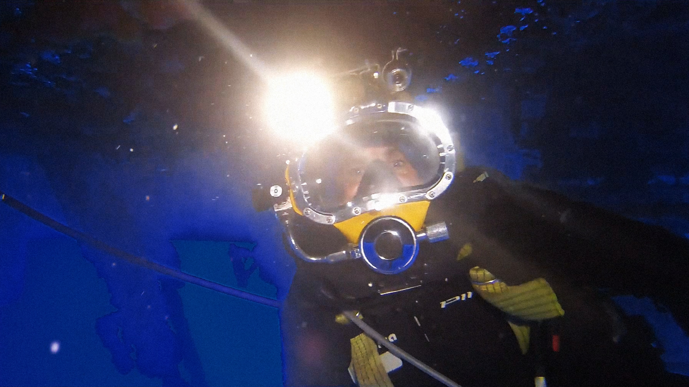

- Operações
- Frota
- Tecnologia
- Pessoas
- Contato
- PT / EN
Ninguém
desce sozinho.
Por trás de cada mergulho há uma embarcação, uma equipe de superfície, robótica e uma engenharia inteira.
Ver quem desce junto ↓
Por trás de cada mergulho há uma embarcação, uma equipe de superfície, robótica e uma engenharia inteira.
Ver quem desce junto ↓